"It isn't a scam.
Life-changing."
Life-changing."
"I was worried that it was a scam. It isn't. The classes have been great. The Facebook group has been life-changing."
T
Tim C.✔ Verified · Trustpilot · Dec 2023
★★★★★
Stephen Ridley's true story, and the method 40,000+ adults use to play the songs they love on 10 minutes a day. No theory drills. No experience needed.

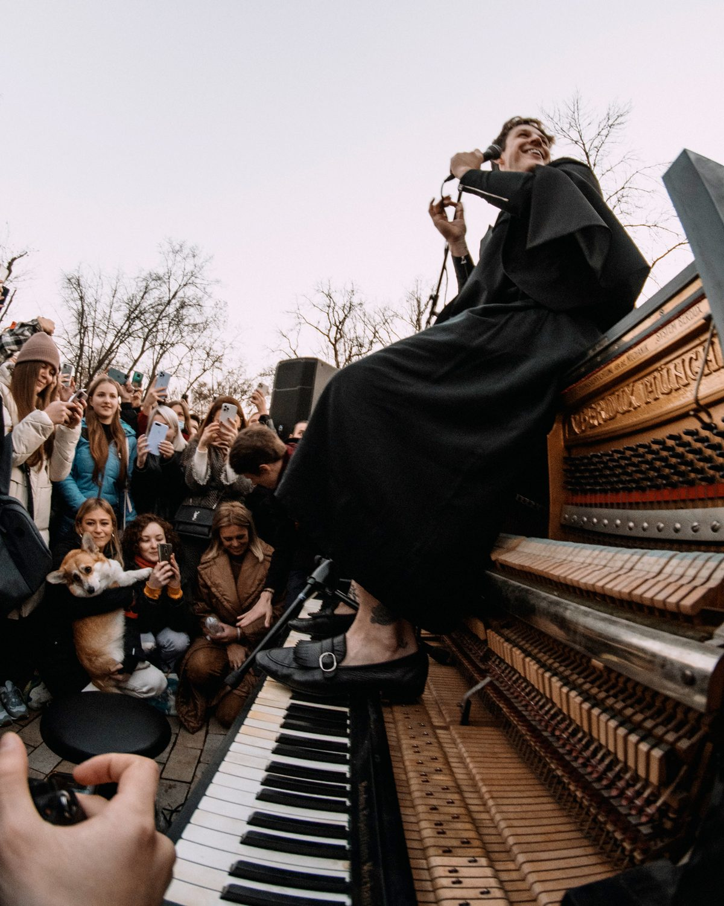

He teaches it exactly the way he plays it.
It plays on the very next screen. No download, no waiting.
The revolutionary new method that's helped over 40,000 adults go from zero to playing like they always dreamed, with less time, less effort, and way, way more fun.
🔒 No Credit Card Required
Book a free 30-minute call. We'll map your way in, answer your questions, and find which program fits where you are now.
🔒 Free. No card needed. 30 minutes.
Powered by Calendly · Free Piano Consultation
Hit play and hear our real student success in their own words.
🔒 No Credit Card Required
Real screenshots, straight from Trustpilot, unedited.
Students who stopped saying “someday” and started playing.


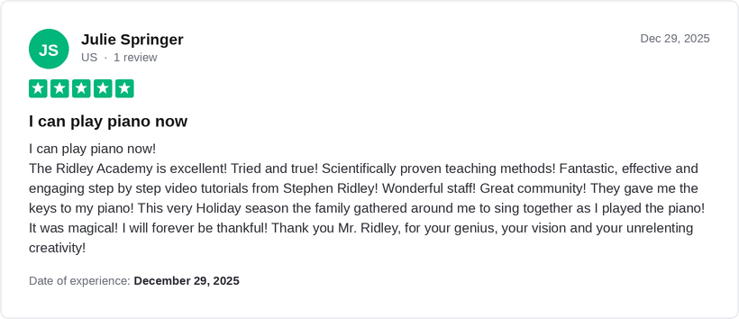


🔒 No Credit Card Required

 Reviews
Reviews


In 60+ countries

Insider Weekly

Trustpilot · Google
A professional pianist for over 10 years. Appeared live on stages in more than 70 countries. Over 1 billion views across social media.


 Russia
Russia
 Italy
Italy
Stephen Ridley is nothing short of a genius.
Pick a song you know. Follow the glowing key. That little rush when it clicks? That's the Ridley Method.
Follow the glowing key
🎉 You just played it!
That took you under a minute. Imagine a full song by Friday.
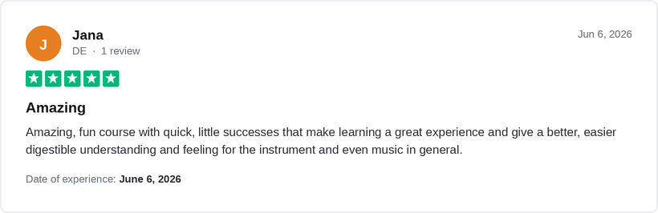
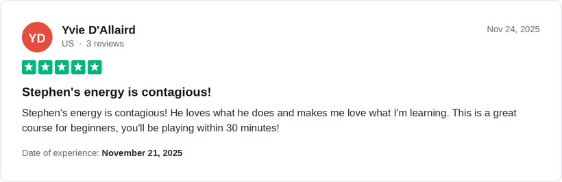

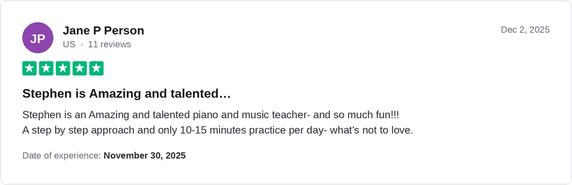


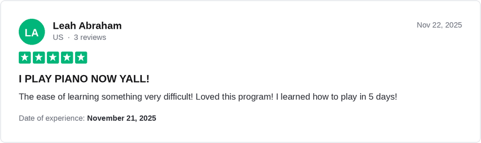
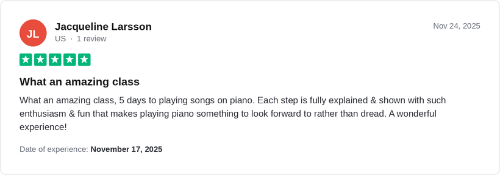


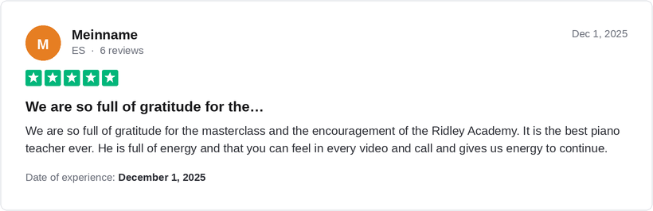
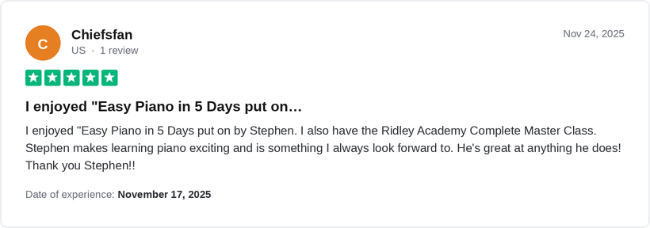


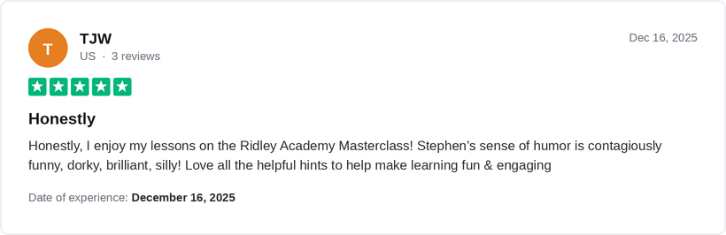


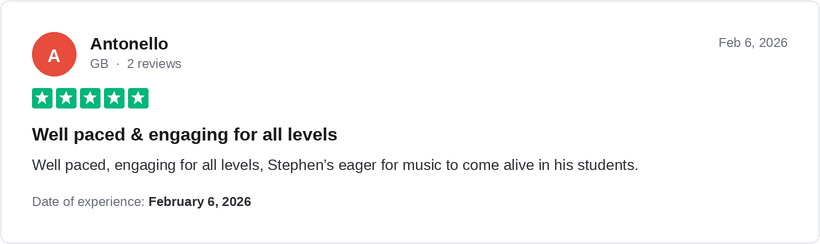
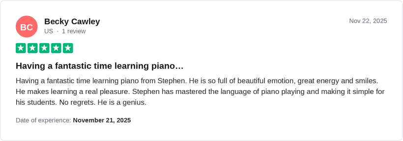
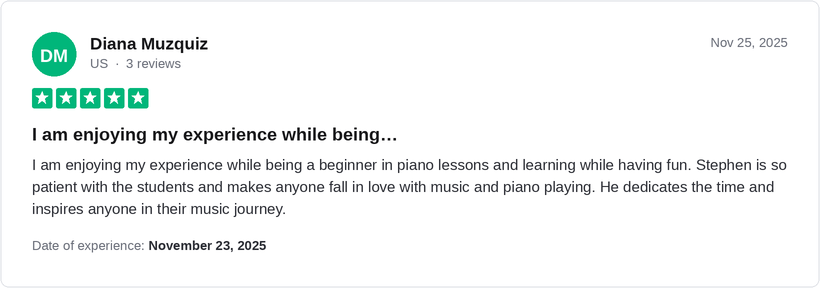
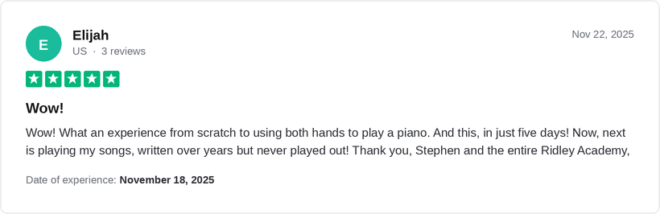
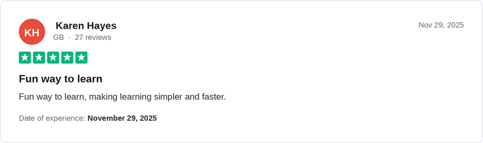
Here's what students of every age are saying about the Ridley Method.

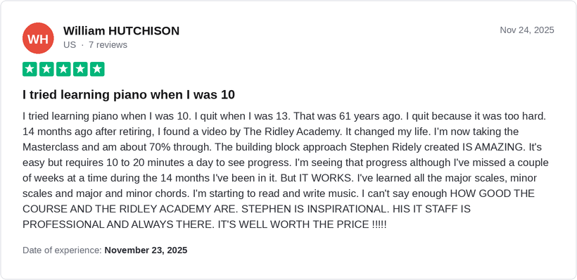
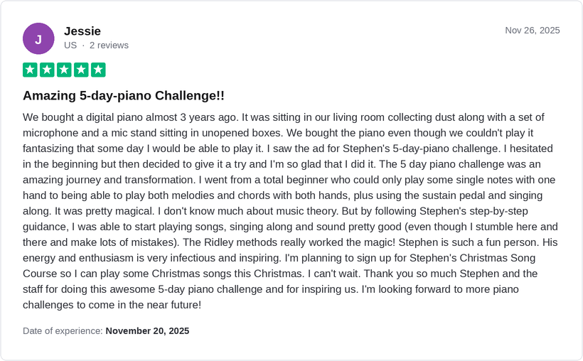


🔒 No Credit Card Required
Most people are shocked when they learn what it costs to learn piano for real the traditional way. Weekly lessons year after year, or a conservatory like Berklee or the Royal School of Music, can run $50,000 to $150,000 over 10 to 20 years.
Our programs are a fraction of that, starting at just $3,000. We offer options for every budget, from a self-study program all the way to personal coaching with a world-class artist who guides you step by step. On your free call we'll find the right fit for your goals and budget.
The piano does not care how old you are. Most of our students are over 50, and we teach players from 8 to 96. Older learners often progress faster: more time, more patience, and a lifetime of songs they've always wanted to play.
Not a problem, it can even be an advantage. Every program includes Stephen personally guiding you to the perfect instrument for your budget, from free pianos on Facebook Marketplace to keyboards at every price point.
Yes. Stephen developed a revolutionary approach called Hand Yoga: simple hand exercises you can do anywhere, any time, that build the coordination and dexterity to play like a pro with just a few minutes a day.
We have a range of different programs that suit different students' preferred learning styles. These range from entirely self-study programs, which require just 10 minutes of daily practice, through to professional coaching programs with full guidance and unlimited access to world-class coaches.
The length of time this takes each individual student depends on that student's starting point, their specific obstacles, and how far they want to go. On all of our programs, students see real results in the first month, and all of our programs are designed to be done with 10 minutes of practice per day.
What is important to note is that at Ridley Academy, the journey of learning piano is not a race. It is developing a beautiful relationship which you will enjoy for the rest of your life. So while we like to keep practice sessions short, simple, and highly rewarding, our focus is on helping you get a real understanding and connection with piano that you can enjoy for the rest of your life.
Yes. We have children from all over the world who enjoy learning piano with Ridley Academy and experience huge success. We have also found huge success in parents or grandparents learning together with their children or grandchildren at the same time. This is a tremendously bonding experience and makes the journey even more special.
At Ridley Academy, we don't focus on what you can't do. We instead take what you can do and work with that to find solutions that get you playing the songs you love. Having now worked with over 40,000 students, we have worked through every kind of physical challenge, from arthritis and carpal tunnel syndrome through to missing fingers and more advanced forms of disability. By focusing on what the student can do, we are able to make real progress and get you winning.
Ultimately, music doesn't care about your disabilities. The piano is for everybody.
One of the most common things we hear from new students at Ridley Academy is a nervousness that they aren't good enough to play piano. Typically, this is an idea which comes from many experiences of failing in music. However, that's exactly what we are here to help with.
To say that you need to be talented to join Ridley Academy is like saying you need to have a six-pack to join the gym. Ridley Academy is the place where you become musical and enjoy a journey that will transform you from day one. There is absolutely no talent required, no special characteristics needed. Just clear, simple guidance that will take you from zero to a full and complete understanding of music that you can enjoy for the rest of your life.
The Complete Piano Masterclass is Ridley Academy's flagship program. Launched over six years ago, this life-changing program takes the student from zero to being able to play the piano with full confidence and understanding. The course was recently awarded Best Online Piano Course by Insider Weekly, and over 40,000 students are now enjoying playing their favorite songs as a result of this revolutionary new approach.
The program was developed by Stephen Ridley, a professional artist who has performed all over the world and has been playing piano for over 30 years.
The traditional approach to piano requires enormous personal discipline: years of persevering through enormously complex theory and rigorous practical exercises. “Modern methods” like apps and YouTube learning are all based on simply copying lights going across a screen, with no training and no idea what you're doing. This again results in very long practice sessions, and an enormous amount of persistence is required over a long period of time to get any results whatsoever.
Ridley Academy's approach to piano is based on three key pillars: fun, fast, simple. Rather than requiring hours of daily practice, we encourage our students to practice with just 10 minutes of focused practice per day. Students who had been blocked for decades are playing their favorite songs in just weeks with this highly simplified approach. The Ridley Method, Stephen Ridley's unique methodology of learning piano, hugely reduces the complexity of music and hugely reduces the need for enormous personal discipline. Instead, the journey is inspiring, motivating, and deeply rewarding, where the student can enjoy the power of music from day one.
For those students who want that extra layer of accountability and support, we also offer a full coaching program with world-class coaching, one-on-one supervision, group sessions, and direct time with Stephen Ridley himself. Ultimately, no matter what style of learning suits you, we have solutions for every kind of student. After getting to know you better on your free consultation call, we can recommend the best program for you, so that you can get the results you want and enjoy playing piano.
"I was worried that it was a scam. It isn't. The classes have been great. The Facebook group has been life-changing."
"Honestly I was very skeptical at first and it seemed too good to be true, but the Complete Piano Masterclass is amazing!"
"It was a large investment for me to sign up for the course. Stephen has a way of teaching music that is different than any other person."
Fresh stories every few seconds, from the 40,000+ adults already playing.